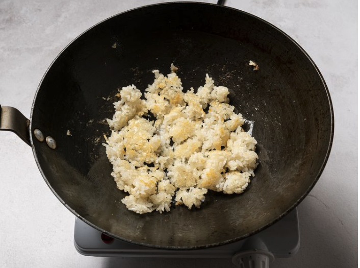
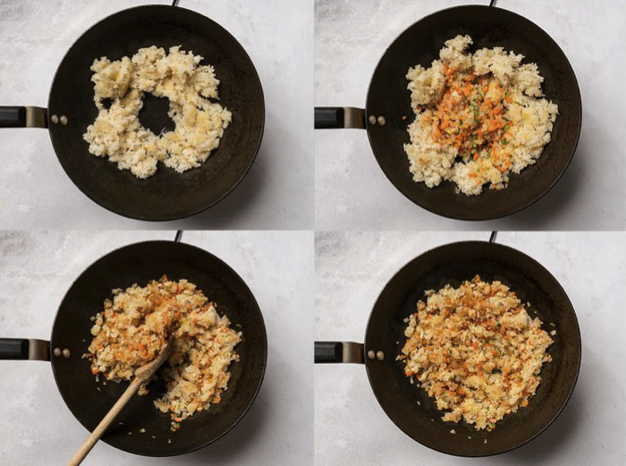
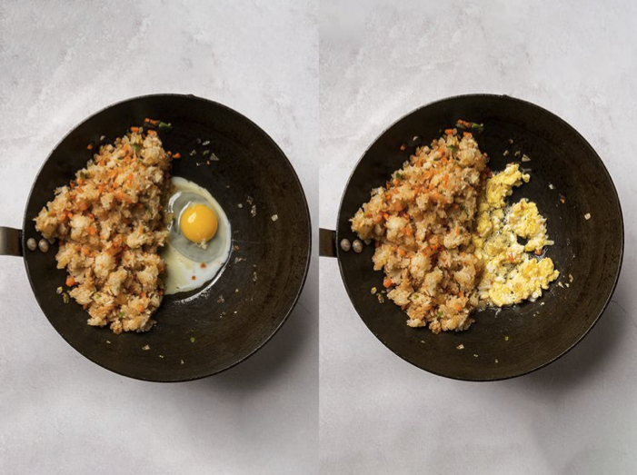
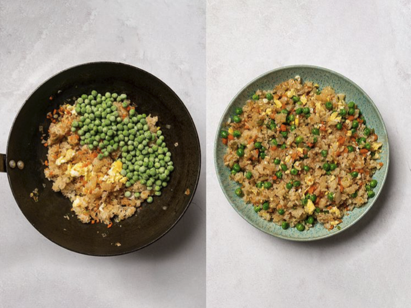

Ingredients
- 3 cups cooked white rice ✓
- 2 tbsp of oil +
- 1 medium onion, chopped ✓
- 2–3 eggs, lightly beaten ✓
- 1 cup frozen peas +
- 1 cup diced carrots +
- 3 tbsp soy sauce +
You have:
✓ Rice cooker
✓ Stovetop & pan
Uses from your pantry: rice, egg, onion
You’d also need: oil,peas, carrot, soy sauce
How to make it
-
Break up leftover rice so the grains are separate. Heat oil in a hot pan
and toast half the rice until lightly browned and chewy. Transfer and repeat.

-
Push rice to the sides. Add oil, then cook onion and carrot until fragrant.
Toss with the rice and stir in soy sauce.

-
Move rice aside and scramble eggs in the center. Season, cook until just set,
then mix into the rice.

-
Add frozen peas and stir until hot and every grain of rice is separate.
Serve immediately.
